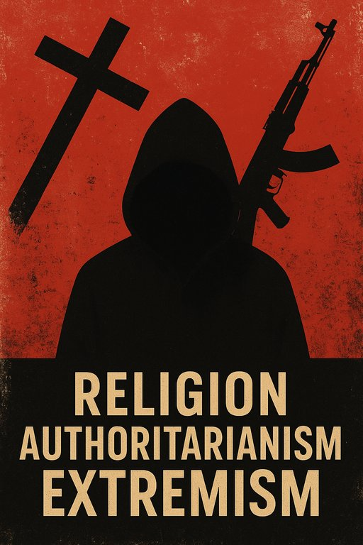

Publicado em 2025-06-22 14:00:26
Desde os primórdios da civilização, as religiões foram mais do que expressões de espiritualidade: foram ferramentas de poder.
Não surgiram apenas como bússolas morais, mas como estruturas hierárquicas de domínio. Quando um sacerdote se coloca entre o homem e o divino, ergue um muro que pode tanto guiar como aprisionar.
A manipulação do medo, da culpa e da salvação criou sistemas em que o bem era condicionado ao poder religioso — e o mal, tudo aquilo que ameaçava essa ordem.
"O inferno não é o castigo dos ímpios. É a alavanca dos déspotas."
Arendt alertava: o mal extremo nem sempre se manifesta em monstros. Muitas vezes veste-se de terno, de batina, de toga — ou de dogma.
A sua visão da “banalidade do mal” é a constatação mais terrível: as maiores atrocidades são cometidas por pessoas obedientes, burocráticas, desprovidas de reflexão moral.
As religiões que justificam guerras, massacres e opressões em nome de deuses tornaram-se agentes históricos de mal disfarçado de fé.
No mundo contemporâneo, o eixo do mal não é apenas militar — é ideológico e religioso. Está centrado em regimes que:
Irão, Hamas, Hezbollah, e até alguns setores da Rússia e da China alinham-se numa agenda comum: destruir a ordem democrática liberal, não por serem moralmente superiores, mas por verem nela uma ameaça ao seu domínio totalitário.
"Onde o fanatismo floresce, a verdade é queimada nas fogueiras do dogma."
O Ocidente, prisioneiro da sua própria culpa histórica e de uma elite pós-moderna relativista, hesita.
Dá palco a ideólogos que equiparam democracias imperfeitas com teocracias assassinas, como se liberdade e totalitarismo fossem faces da mesma moeda. A confusão moral é tamanha que hoje se “compreende” o terrorismo, mas se condena a defesa de Israel.
É um mundo onde a ética se rende ao politicamente correcto, e onde o bem é relativizado — abrindo alas ao retorno do mal absoluto.
A resposta não pode ser uma cruzada inversa, nem outro dogma.
Mas sim:
O tempo de hesitações acabou. O bem, se quer sobreviver, precisa de firmeza.
Autor: Augustus Veritas Lumen
"Quando o mal se disfarça de fé e a fé se torna instrumento de poder, o sagrado transforma-se em opressão. O eixo do mal contemporâneo não se ergue apenas sobre arsenais militares ou discursos fanáticos, mas sobre séculos de manipulação simbólica, de dogmas impostos e de ignorância cultivada. Neste teatro sombrio, religiões tornadas instituições esquecem o amor e celebram o domínio; nações erguem-se como divindades vingativas e confundem justiça com vingança."